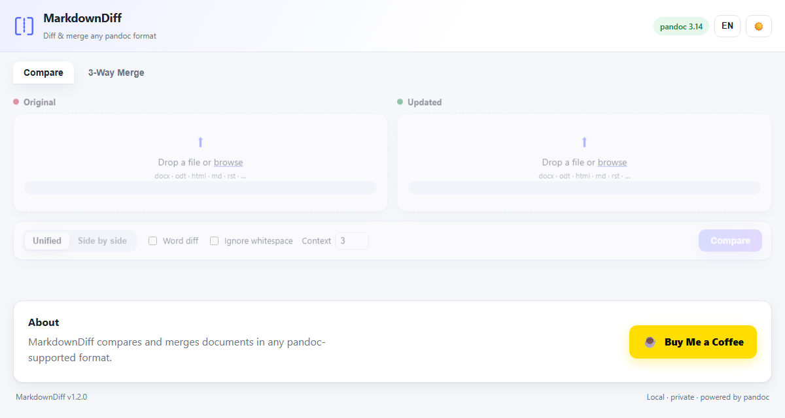
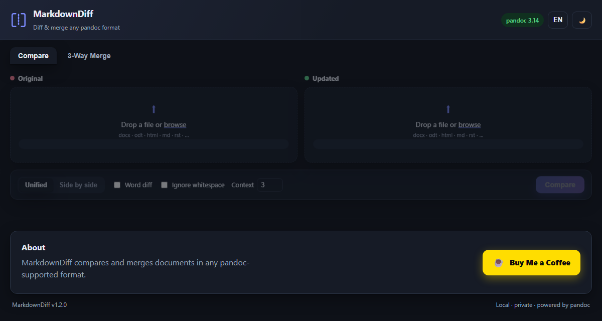

/* diff & merge any document */
See what actually changed.
MarkdownDiff compares and merges Word, ODT, HTML, LaTeX, EPUB — any format pandoc reads — by normalizing each one to clean Markdown. No binary noise, no format drama. Just the words that changed.
$ npm i -g markdowndiff
/* semantic, not binary */
Diffs of meaning, not markup.
Two .docx files are just zipped XML — git diff
shows you nothing useful. MarkdownDiff converts both to normalized
Markdown first, so you see the sentence that changed, the clause that
moved, the number that got edited. Even across different formats.
- Unified & side-by-side views
- Word-level highlighting
- Ignores cosmetic typography (smart quotes, wrapping)
diff-style exit codes for CI
/* light or dark, your call */
Beautiful in any theme.
A local web GUI with drag-and-drop, and a CLI that themes itself to your
terminal. Light, dark, high-contrast — every color editable down to the
hex, from a config file or a --theme-file.


/* three-way merge */
Reconcile two people's edits.
Give it a common ancestor and two versions. Non-overlapping changes merge themselves; real conflicts are shown side by side.
/* more than plain text */
Tables and diagrams, not just prose.
It's Markdown all the way down. Structured tables diff cell-by-cell, and because a Mermaid diagram is just text, MarkdownDiff diffs your diagrams too.
flowchart LR
A["docx / odt / html / rst / …"] --> P(["pandoc"])
P --> M["normalized Markdown"]
M --> D{"diff / merge"}
D --> O["readable diff"]
/* everything pandoc reads */
One tool. Every format.
If pandoc can read it, MarkdownDiff can diff it.
⌨ terminal · CLI
npm i -g markdowndiff # compare two documents markdowndiff old.docx new.docx # side-by-side, light theme markdowndiff -s --theme light a.md b.md # three-way merge markdowndiff --base orig.md mine.md yours.md
🖥 browser · GUI
markdowndiff-gui # opens http://localhost:4173 # drag & drop · compare · merge # light / dark · copy & download # 100% local — files never leave # your machineRead the docs →